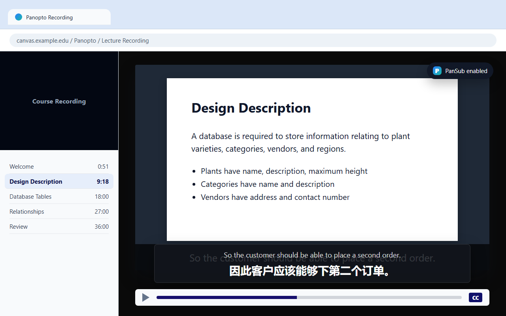
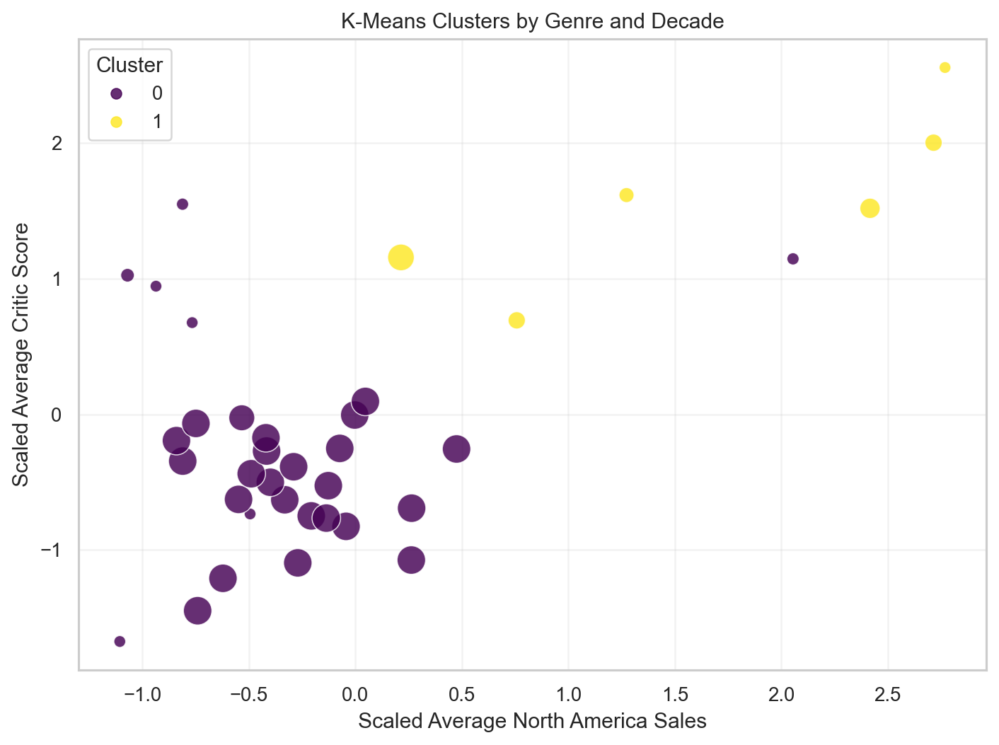
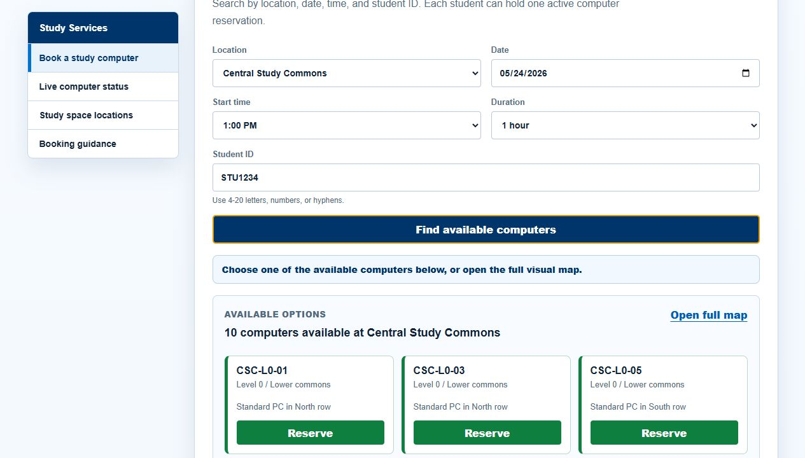
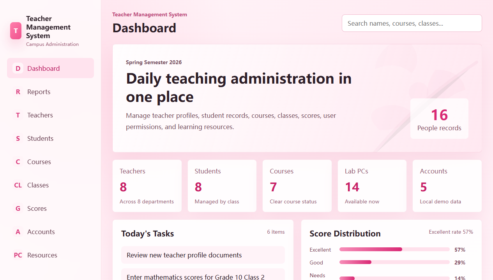

Data questions
Cleaning data, comparing models, checking assumptions, and turning outputs into charts or reports that a non-technical person can read.
Data analytics / practical AI / software
Data analyst building practical AI and full-stack systems.
Business Analytics graduate and Master of IT student in Auckland. I turn data questions into analysis workflows, AI-assisted tools, and software people can inspect and use.
Profile
My background connects commercial questions with technical execution. I investigate data, shape useful AI workflows, and carry product ideas through frontend, backend, database, and verification.
Cleaning data, comparing models, checking assumptions, and turning outputs into charts or reports that a non-technical person can read.
Building focused tools where AI improves a real workflow, such as translation, summarisation, search, or making study material easier to follow. I use AIDLC concepts to frame needs, inspect data, evaluate outputs, and iterate from evidence.
Connecting frontend, backend, database, and deployment concerns so a project works end to end instead of only looking complete.
AIDLC
I have been learning AIDLC as a practical way to keep AI work grounded: start with the user problem, inspect the data, build a small version, evaluate it honestly, and improve it from evidence.
Problem first
For a tool like PanSub, I would start by asking where students actually struggle: caption timing, translation clarity, or the friction of switching tools while watching a lecture.
Data awareness
In my analysis projects, this means checking missing values, class balance, feature meaning, and whether a chart is explaining something real or only making noise look tidy.
Small working version
I prefer building a thin but complete workflow first: frontend, API, storage, and one clear result. It makes problems easier to see than a large unfinished design.
Evaluation
For AI and data projects, I want to get better at recording what fails, what improves the result, and what a user would still need before trusting the system.
Projects
These are the projects I would show first for data analytics, AI, and practical software roles. Each card links to the GitHub README so the code and project notes are easy to inspect.
Showing all selected projects.

Business analytics dashboard / full-stack
A full-stack analytics platform that turns a small retailer's sales and inventory CSVs into KPI dashboards, product performance, inventory risk, channel comparison, and a weekly business report.

AI tool / browser extension
A Chrome extension for Panopto lecture recordings that reads the active caption stream and overlays translated subtitles on top of the player.

Data analysis / machine learning
A reusable analysis workflow for cleaning video game sales data, training models, generating charts, and exporting metrics for a readable report.
 Live
Live
Full-stack marketplace
A peer-to-peer second-hand marketplace for listing goods, browsing by filters, messaging sellers, making offers, placing orders, and reviewing completed trades.

Campus utility system
A study computer booking demo with validated booking details, live availability states, and a visual workstation map.

Admin dashboard / reporting
A school administration demo for managing teachers, students, courses, classes, scores, reports, accounts, and learning resources.
Notebook
Inspired by strong AI blogs, I want this site to become more than a list of projects. These are the notes I would like to publish as I keep learning and building.
Caption streams, browser constraints, overlay UI, and where an AI feature helps or gets in the way.
How I read charts, compare outputs, and avoid pretending that every model result is equally useful.
Listings, offers, messages, orders, reviews, and why state transitions matter in real applications.
What screenshots, setup steps, feature notes, and learning summaries make a project easier to trust.
How planning, data checks, tool choice, evaluation, and iteration can keep an AI feature grounded.
Skills
A working stack across data, AI, and product engineering.
Cleans data, compares models, and turns outputs into readable evidence.
Contact
I am especially interested in teams working across data analytics, AI-enabled tools, and practical software development.
Quick launch